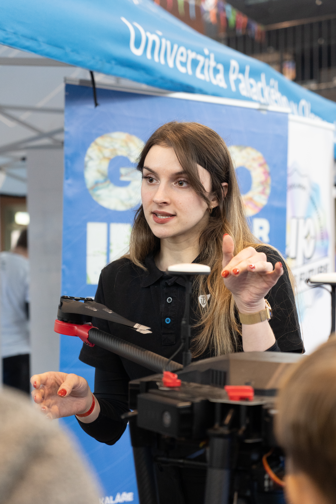
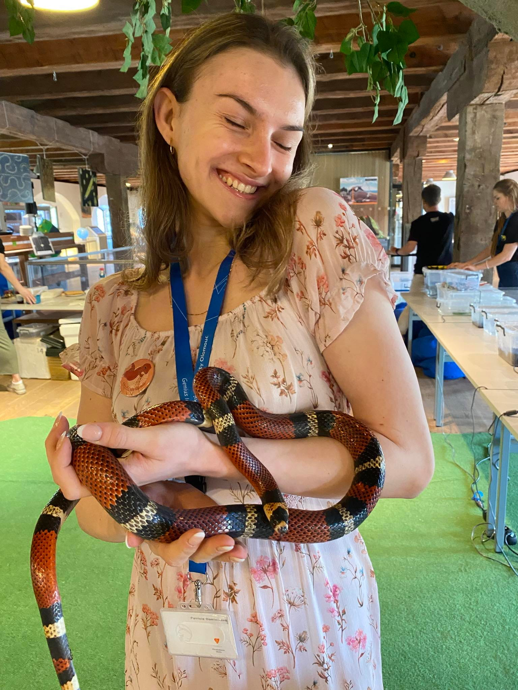

Bakalářská práce
Bakalářská práce na téma 3D vizualizace architektonického dědictví – návrh a tvorba 3D modelů vybraných objektů a jejich interaktivní prezentace v mapovém prostředí.



Jsem studentka magisterského studia geoinformatiky na Univerzitě Palackého. Zajímám se o 3D modelování, tvorbu map a analýzu dat, ve kterých ráda hledám souvislosti.
Zkušenosti získávám při práci na projektech pro univerzitu, veřejnou správu i v rámci popularizačních aktivit. Umím pracovat samostatně i v týmu a mezi mé silné stránky patří dobrá organizace času i práce.
Bakalářská práce na téma 3D vizualizace architektonického dědictví – návrh a tvorba 3D modelů vybraných objektů a jejich interaktivní prezentace v mapovém prostředí.
Týmová práce na návrhu mapové aplikace: analýza dat, návrh kartografického zobrazení a příprava jednoduchého prototypu pro prezentaci porotě.
Tvorba 3D modelů sakrálních objektů, příprava dat pro 3D tisk a vizualizace pro popularizační a výukové materiály.
Tvorba grafických projektů v rámci studia.
Tvorba schémat inženýrských sítí pro státní správu.
Soubor vytvořených map v rámci studia a práce.
3D modelování • mapy • GIS
E‑mail: dominikova.patricie@gmail.com
LinkedIn: Patricie Dominiková
Tvorba schémat inženýrských sítí (zejména optických kabelů) a aktualizace mapových podkladů pro potřeby města.
Modelování sakrálních objektů (kostely, ...) pro katedru historie v rámci projektu NAKI III.
Vedení kroužků a příměstských táborů, práce a komunikace s dětmi i dospělými, překlad, tvorba map, práce v infocentru.
Ambasadorka pro UPOL a katedru informatiky, aktualizace databází, zpracování dotazníkových šetření.
Administrativní podpora programu Newton a kontaktní osoba pro studenty.